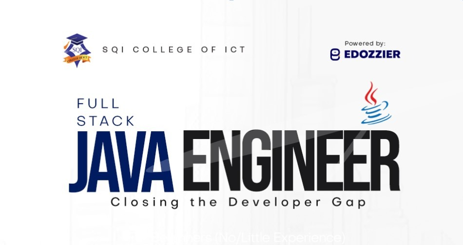
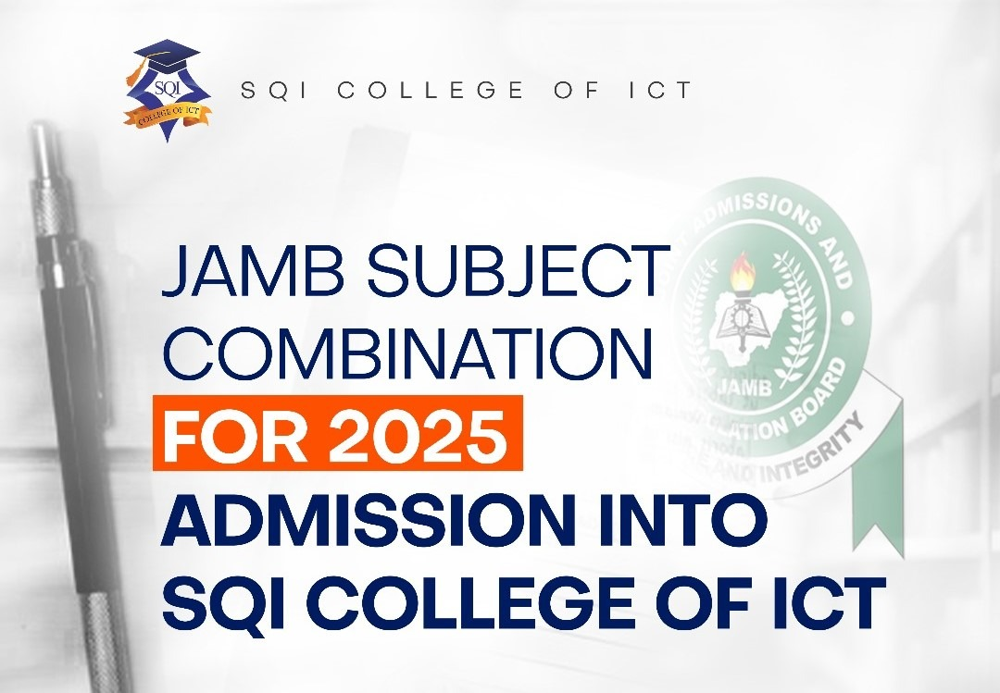

Students embrace new opportunities with matriculation at SQI college of ICT
May 5, 2025
SQI College of ICT,Ogbomoso, on Saturday, May 3, 202, held its 6th Matriculation Ceremony for the 2024/2025 academic session. The vibrant ceremony, held at the college's main auditorium, brought together dignitaries from the education sector, traditional rulers,...

Building the Next Army of Java Generals
Mar 21, 2025
Moniepoint recently received significant seed funding, enabling them to recruit a large number of Java developers at unprecedented salaries (₦1.5m – ₦2.5m monthly). While this is great news for those developers, it has left many financial institutions—especially banks—with a shortage of capable Java developers…

JAMB subject combination for 2025 admission into SQI College of ICT
Feb 18, 2025
A common reason JAMB UTME candidates are denied admission is the wrong combination of subjects. Our goal here is to help you avoid this mistake. Specifically, this post highlights the JAMB subject combinations for JAMB subject combination for 2025 admission into SQI...